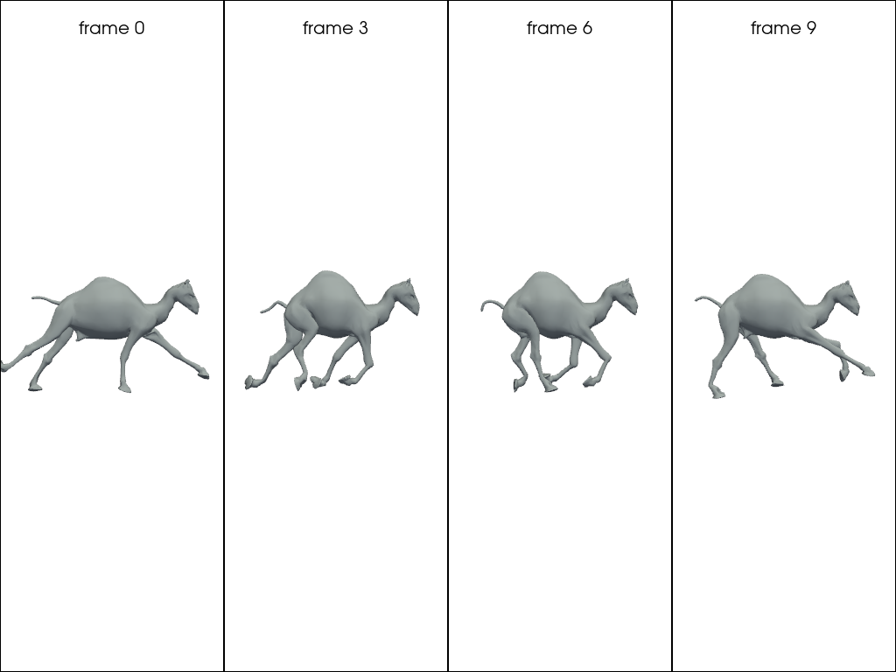
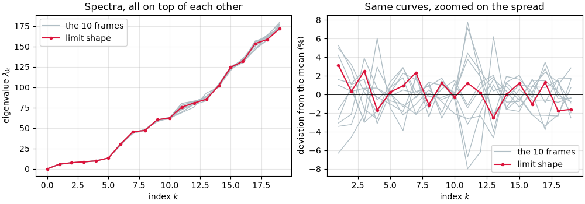
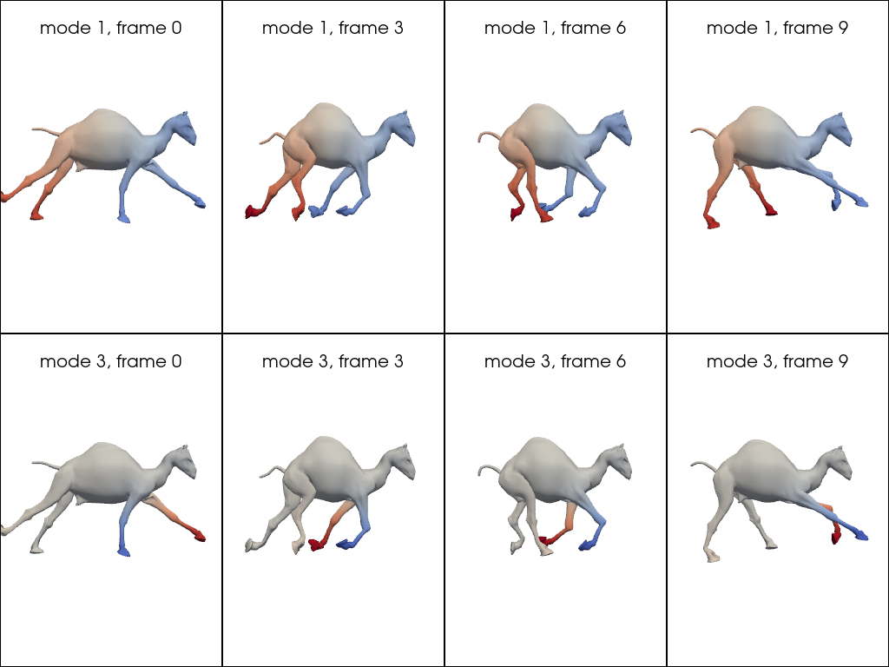
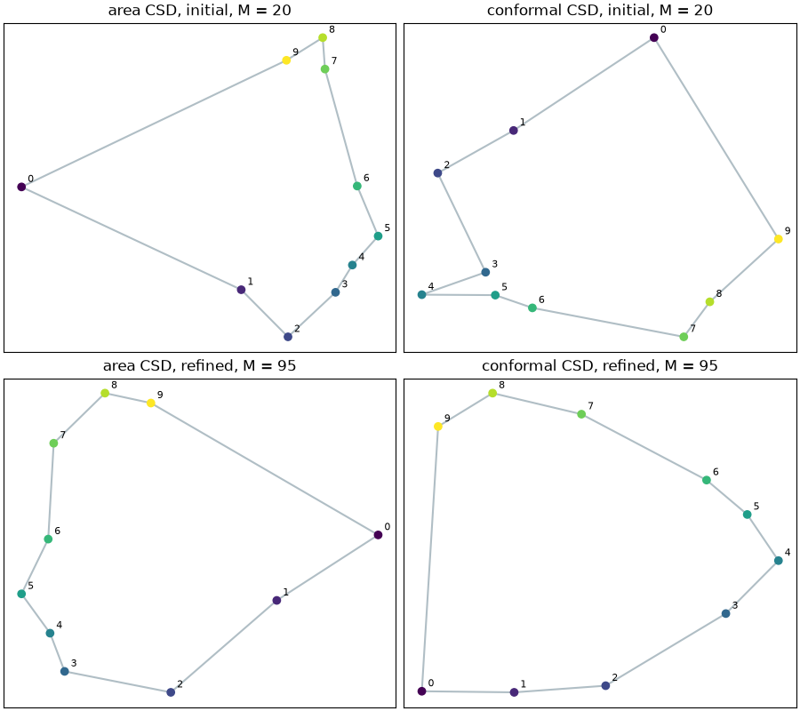
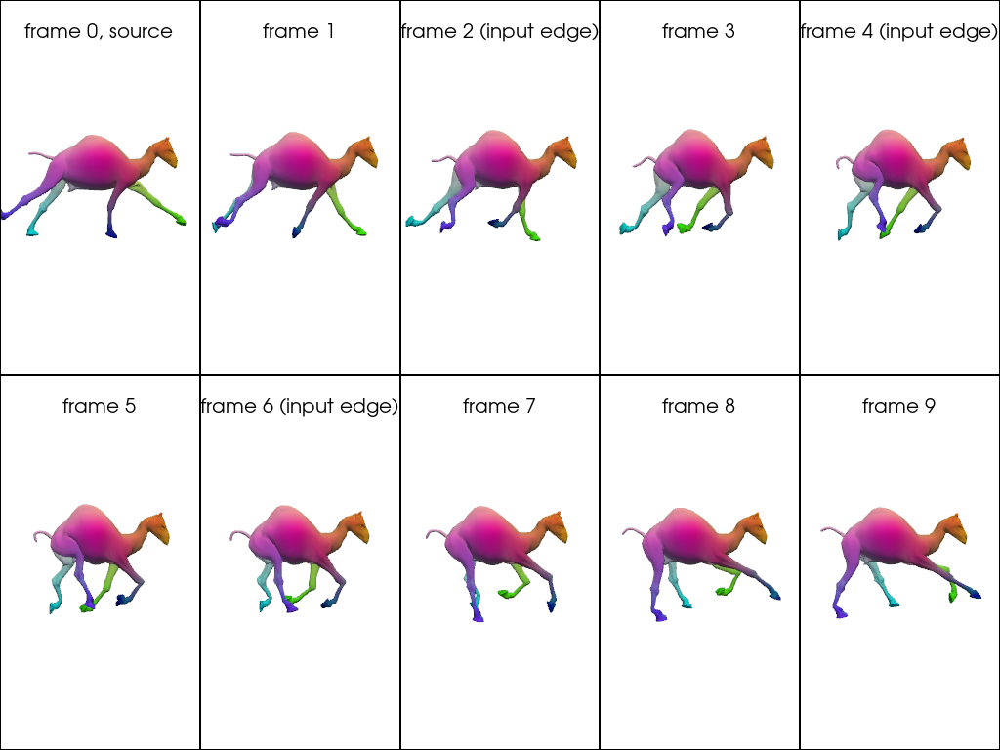

Note
Go to the end to download the full example code.
Maps across a collection of shapes¶
The previous pages matched two shapes at a time. When a whole collection is available, matching pairs independently wastes information: a map from shape 1 to shape 2, followed by a map from shape 2 to shape 3, should agree with the direct map from shape 1 to shape 3. It rarely does.
A Functional Map Network fixes this. It takes the shapes as nodes and the maps as edges, then looks for the functions that all the maps agree on. Those functions form the basis of a limit shape: one shape the whole collection agrees on, which has a spectrum but no vertices.
This page builds a network from ten frames of a galloping camel, draws the limit shape, uses it to sort the frames back into a gait cycle, and ends by reading correspondences off it.
Setup¶
The example meshes live in the pyFM repository under examples/data and are not part of the
installed package.
import os
from pathlib import Path
import matplotlib.pyplot as plt
import numpy as np
import pyvista as pv
from sklearn.decomposition import PCA
from pyFM.FMN import FMN
from pyFM.mesh import TriMesh
from pyFM.spectral import knn_query, mesh_p2p_to_FM
from pyFM.viz import plot_mesh, vertices_to_rgb
def example_data(name):
"""Return the path to a mesh in the ``examples/data`` folder."""
for folder in [Path.cwd(), *Path.cwd().parents]:
candidate = folder / "examples" / "data" / name
if candidate.exists():
return candidate
raise FileNotFoundError(
f"{name!r} not found. These examples read data from the pyFM repository; "
"clone it and run them there."
)
np.random.seed(0)
A collection of shapes¶
The ten meshes are frames of a galloping camel. They are the same animal in ten poses, so a map between any two of them exists and is close to an isometry.
Each frame was triangulated on its own, so correspondences are unknown.
meshlist = [
TriMesh.load(
example_data(f"camel_gallop/camel-gallop-{i:02d}.off"), area_normalize=True, center=True
).process(k=150, intrinsic=True)
for i in range(1, 11)
]
print(f"{len(meshlist)} frames")
print(f"vertices per frame: {[mesh.n_vertices for mesh in meshlist]}")
frames_shown = [0, 3, 6, 9]
pl = pv.Plotter(shape=(1, len(frames_shown)))
for i, frame in enumerate(frames_shown):
pl.subplot(0, i)
plot_mesh(meshlist[frame], color="#b0bec5", pl=pl)
pl.add_title(f"frame {frame}", font_size=9)
pl.link_views()
pl.show(cpos="zy")

10 frames
vertices per frame: [4999, 5001, 5002, 5001, 5001, 5002, 5001, 5001, 5001, 5000]
From pointwise maps to a network¶
The input maps come with the dataset. They are noisy, and they only cover some of the
pairs. Each file is named j_to_i and holds the pointwise map p2p_ij, which for
every vertex of frame j gives the matching vertex of frame i.
mesh_p2p_to_FM() compresses each one into a functional
map. We keep only K = 20 coefficients: the input maps are noisy, and the high
frequencies of a noisy map are mostly noise.
K = 20
maps_dict = {}
for map_filename in sorted(os.listdir(example_data("camel_gallop/maps"))):
ind2, ind1 = map_filename.split("_to_")
ind1, ind2 = int(ind1) - 1, int(ind2) - 1 # files count from 1, the list from 0
p2p_21 = np.loadtxt(example_data(f"camel_gallop/maps/{map_filename}"), dtype=int)
maps_dict[(ind1, ind2)] = mesh_p2p_to_FM(p2p_21, meshlist[ind1], meshlist[ind2], dims=K)
print(f"{len(maps_dict)} maps over {len(meshlist)} shapes, each of shape {maps_dict[0, 2].shape}")
print(f"frame 0 is connected to frames {sorted(j for i, j in maps_dict if i == 0)}")
30 maps over 10 shapes, each of shape (20, 20)
frame 0 is connected to frames [2, 4, 6]
The graph is sparse. Thirty edges over ten shapes means each frame is connected to about three others, and most pairs are not connected at all. The network will have to fill in the rest.
Building the network¶
FMN takes the shapes and the maps.
The functional map network is made of
nodes, which are the shapes, which carry the geometry (vertices, faces), but also spectral information (eigenvalues, eigenfunctions)
edges, which are the functional maps between the shapes, encoding how to transfer functions from one shape to another
compute_CCLB() then computes the Canonical Consistent Latent
Basis, in m dimensions.
The idea is simple. A function on the collection is a function on each shape.
It is consistent with the functional maps given at each edge if the functional map stored on each edge actually
transports the value of the function on the shapes at its extremities.
Perfect consistency is impossible with noisy maps, so the method looks for the m functions that come closest.
This is done by solving an eigenproblem.
Those functions form a basis, which will be our new way to represent function spaces on each of the nodes.
Note that on each shape, we are now restricting to a subspace of the initial functional space we were given.
This means that the CCLB is of size (n_nodes, K, m), where for each node, the \(m\) basis vectors are all expressed in
the \(K\)-dimensional spectral basis of that node.
fmn_model = FMN(meshlist, maps_dict.copy())
fmn_model.compute_CCLB(m=20, verbose=False)
print(f"limit shape basis: {fmn_model.CCLB.shape} (one (M, m) block per mesh)")
print(f"limit shape eigenvalues: {fmn_model.cclb_eigenvalues.shape}")
Setting 30 edges on 10 nodes.
limit shape basis: (10, 20, 20) (one (M, m) block per mesh)
limit shape eigenvalues: (20,)
The limit shape¶
The limit shape is an abstract shape, which can be seen as a template for the collection. The strange thing is that it has no geometry, only spectral information.
To understand this spectral information, we can represent and visualize it on each shape in the collection. Since each eigenvector is a function on the collection, we can visualize it on each shape to get an intuition of the limit shape’s spectral properties.
The frames are the same animal in different poses, so their spectra nearly coincide and the left panel shows one curve. The right panel keeps only the spread, a few percent wide. The limit shape is an average of the collection, not a new shape.
n_shown = 20
frame_evals = np.array([mesh.eigenvalues[:n_shown] for mesh in meshlist])
limit_evals = fmn_model.cclb_eigenvalues[:n_shown]
fig, axs = plt.subplots(1, 2, figsize=(10, 3.5), constrained_layout=True)
axs[0].plot(frame_evals.T, "-", color="#b0bec5", linewidth=1)
axs[0].plot(limit_evals, ".-", color="crimson")
axs[0].set_ylabel(r"eigenvalue $\lambda_k$")
axs[0].set_title("Spectra, all on top of each other")
# The frames are near-isometric, so the raw curves overlap. Look at the spread instead,
# skipping k = 0 whose eigenvalue is zero.
modes = np.arange(1, n_shown)
mean_evals = frame_evals[:, 1:].mean(axis=0)
axs[1].plot(modes, 1e2 * (frame_evals[:, 1:] / mean_evals - 1).T, "-", color="#b0bec5", linewidth=1)
axs[1].plot(modes, 1e2 * (limit_evals[1:] / mean_evals - 1), ".-", color="crimson")
axs[1].axhline(0, color="black", linewidth=0.6)
axs[1].set_ylabel("deviation from the mean (%)")
axs[1].set_title("Same curves, zoomed on the spread")
for ax in axs:
ax.plot([], [], "-", color="#b0bec5", label="the 10 frames")
ax.plot([], [], ".-", color="crimson", label="limit shape")
ax.set_xlabel("index $k$")
ax.legend()
ax.grid(alpha=0.3)
plt.show()
print(f"frame eigenvalues at k=1: {np.round(frame_evals[:, 1], 3)}")
print(f"limit shape at k=1 : {limit_evals[1]:.3f}")

frame eigenvalues at k=1: [5.284 5.446 5.467 5.73 5.92 5.937 5.878 5.696 5.549 5.489]
limit shape at k=1 : 5.817
We can visualize the basis functions of the limit shape, even though the shape itself cannot be drawn.
get_LB() (for “get Latent Basis”) evaluates the basis on the vertices of any frame, returning
an (n_i, m) array. Each column is the same limit-shape function seen on that frame.
We can see the function barely changes from frame to frame. This is due to the consistency constraint. Compare with The Laplacian and its spectrum, where each mesh had its own unrelated eigenfunctions.
The sign of an eigenvector is arbitrary, so we fix it here to keep the figure stable.
latent_basis = [fmn_model.get_LB(i) for i in range(fmn_model.n_meshes)]
reference = latent_basis[0]
signs = np.sign(reference[np.abs(reference).argmax(axis=0), np.arange(reference.shape[1])])
latent_basis = [basis * signs for basis in latent_basis]
modes_shown = [1, 3]
pl = pv.Plotter(shape=(len(modes_shown), len(frames_shown)))
for row, mode in enumerate(modes_shown):
bound = max(np.abs(latent_basis[frame][:, mode]).max() for frame in frames_shown)
for col, frame in enumerate(frames_shown):
pl.subplot(row, col)
plot_mesh(
meshlist[frame],
scalars=latent_basis[frame][:, mode],
cmap="coolwarm",
clim=(-bound, bound),
pl=pl,
)
pl.add_title(f"mode {mode}, frame {frame}", font_size=9)
pl.link_views()
pl.show(cpos="zy")

Shape differences and the cycle¶
Because every frame is now described in the same basis, the frames can be compared.
get_CSD() returns two Characteristic Shape Difference
operators, both (m, m).
Shape difference operators provide a matrix embedding of (some notion of) the difference between two shapes.
Here, the “Characteristic” means that the operators describe how each frame differs from the limit shape.
Therefore, each frame is encoded as a \(m^2\) vector. And we will reduce it to two dimensions with PCA over the collection.
def shape_difference_embedding(model):
"""Return the area and conformal CSD of every shape, flattened, as (n_meshes, m*m)."""
area, conformal = [], []
for i in range(model.n_meshes):
csd_a, csd_c = model.get_CSD(i)
area.append(csd_a.flatten())
conformal.append(csd_c.flatten())
return np.array(area), np.array(conformal)
embedding_initial = shape_difference_embedding(fmn_model)
print(f"each frame is described by {embedding_initial[0].shape[1]} numbers")
each frame is described by 400 numbers
Consistent ZoomOut¶
The maps we started from were truncated to 20 coefficients.
zoomout_refine() grows them, a few coefficients at a time,
recomputing the limit shape at every step and reading new maps off it.
This is the collection-wide version of the ZoomOut used in Computing a map without a correspondence,
refining all the maps jointly instead of one pair at a time.
fmn_model.zoomout_refine(
nit=15,
step=5,
subsample=None,
isometric=True,
weight_type="icsm",
M_init=None,
cclb_ratio=0.9,
n_jobs=1,
equals_id=False,
verbose=False,
)
fmn_model.compute_CCLB(m=int(0.9 * fmn_model.M), verbose=False)
embedding_refined = shape_difference_embedding(fmn_model)
print(f"maps grew to M = {fmn_model.M}, limit shape basis to m = {fmn_model.m_cclb}")
maps grew to M = 95, limit shape basis to m = 85
The frames form a cycle, so a good embedding should place them on a loop, in order, with the tenth frame next to the first. Nothing in the method knows this: the ordering is recovered from the maps alone.
Before refinement the loop is already visible but noisy. Afterwards it is a clean cycle.
fig, axs = plt.subplots(2, 2, figsize=(9, 8), constrained_layout=True)
rows = [("initial, M = 20", embedding_initial), (f"refined, M = {fmn_model.M}", embedding_refined)]
for row, (label, (area, conformal)) in enumerate(rows):
for col, (name, embedding) in enumerate([("area", area), ("conformal", conformal)]):
reduced = PCA(n_components=2).fit_transform(embedding)
loop = np.vstack([reduced, reduced[:1]]) # close the cycle
ax = axs[row, col]
ax.plot(loop[:, 0], loop[:, 1], "-", color="#b0bec5", zorder=1)
ax.scatter(reduced[:, 0], reduced[:, 1], c=np.arange(len(reduced)), zorder=2)
for i, (x, y) in enumerate(reduced):
ax.annotate(str(i), (x, y), textcoords="offset points", xytext=(5, 4), fontsize=8)
ax.set_title(f"{name} CSD, {label}")
ax.set_xticks([])
ax.set_yticks([])
plt.show()

Correspondences from the limit shape¶
The limit shape also gives back the maps. Every frame carries the same basis, so two
frames can be matched by looking, for each vertex of one, which vertex of the other
carries the closest basis values. That is a nearest-neighbour query in m dimensions.
This works for any pair, not only the ones that came with a map. Frame 0 was connected to three other frames; below it is matched to all nine.
latent_basis = [fmn_model.get_LB(i) for i in range(fmn_model.n_meshes)]
colors = vertices_to_rgb(meshlist[0].vertices)
pl = pv.Plotter(shape=(2, 5))
for j in range(fmn_model.n_meshes):
pl.subplot(j // 5, j % 5)
if j == 0:
plot_mesh(meshlist[0], scalars=colors, pl=pl)
pl.add_title("frame 0, source", font_size=9)
else:
p2p_0j = knn_query(latent_basis[0], latent_basis[j], k=1)
edge = (0, j) in maps_dict or (j, 0) in maps_dict
plot_mesh(meshlist[j], scalars=colors[p2p_0j], pl=pl)
pl.add_title(f"frame {j}{' (input edge)' if edge else ''}", font_size=9)
pl.link_views()
pl.show(cpos="zy")

Matching colors mean matching points. The legs and the head keep their color across the whole gallop, including on the six frames that were never connected to frame 0 in the input graph.
This is what the network buys you. Given a collection and a handful of noisy maps, it returns one shared basis, maps between every pair, and an embedding that orders the collection.
Total running time of the script: (0 minutes 33.456 seconds)